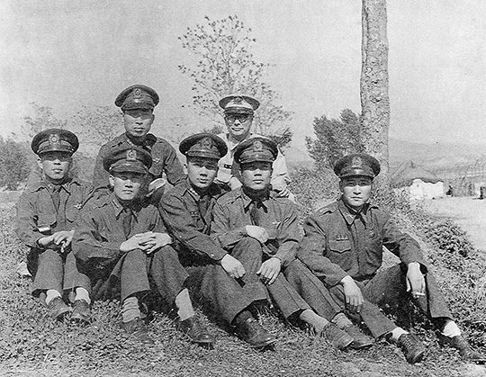
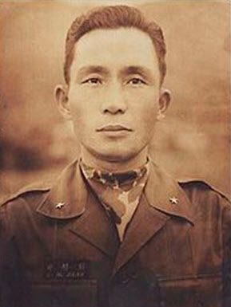

연재일 2014-08-05출처 조선일보 프리미엄조선 연재
단 한 번, 박정희는 군대경력에서 박태준의 후배라는 기록을 남겼다. 육군대학이 그것이다. 1953년 11월 준장 진급 후 미국 육군 포병학교 고등군사반을 유학하고 광주포병학교 교장을 거쳐 5사단장으로 있던 박정희가 갑자기 진해의 육군대학에 입교한 것은 1956년 7월이었다. 그해 5월의 대통령 선거에서 ‘이승만 당선시키기 부정선거’에 전혀 협조하지 않은 데 대한 보복성 좌천인사였다. 장군 입교는 그가 처음이기도 했다.
박태준이 육군대학에 입교한 때는 1953년 11월, 계급은 중령이었다. 육군대학을 수석으로 졸업하며 대통령 하사품인 금시계를 받은 그는 육군의 엘리트 반열에 올라 이종찬 장군과 박병권 장군에게 남다른 주목을 받고 있었다. ‘금시계 중령’을 두 장군이 서로 데려가겠다고 했다. 육대 총장 이종찬은 육대에, 육사 교장 박병권은 육사에. 두 장군의 합의에 따라 박태준은 육사 교무처장으로 부임한다.
박정희가 언제부터 ‘거사’를 꿈꾸며 군부의 ‘내 사람’을 만들기 시작했을까? 1956년 5월 대선 후 육대로 좌천당한 그즈음부터라는 견해가 지배적이다. 육대를 졸업한 그는 다른 사람이 되어 있었다고 한다. 인간성이 달라진 것이 아니었다. 세상의 모순덩어리를 해치우려는 포부를 가슴에 품고 ‘내 사람’을 찾아내고 만들기 시작했다는 것이다.

1957년 가을, 박태준 대령은 국방부 인사과장으로 있었다. 뒷구멍을 몰래 열어두면 마치 부엌의 음식을 훔쳐 나르는 영특한 쥐를 키우는 것처럼 청탁의 재물들을 소복소복 쌓을 수 있는 요직이었다. 하지만 그따위 뒷구멍을 경멸하는 장교에게는 차라리 지겨운 자리였다. 그런 어느 날이었다. 불쑥 그를 찾아온 장군이 있었다.
“자네 소문은 잘 듣고 있었어. 얼굴은 못 봤지만 자주 만난 것 같아.”
“감사합니다.”
벌떡 일어선 박태준은 은사 앞에서 환히 웃었다. 둘이서만 마주서기란 평생 처음이었다. 박정희는 자신이 육대에 박혀 있던 기간에 박태준이 국방대학원을 우수한 성적으로 나와 거기서 국가정책 수립담당 책임교수를 맡았다는 것도 알고 있었다. 물론 박태준도 근년에 부정선거에 반기를 들었던 박정희의 수난과 청렴성에 대해 듣고 있었다. 육군의 고위 장교 조직은 넓어 보여도 손바닥처럼 빤한 사회인 것이다.
“자네가 육군대학은 나보다 선배지?”
스승과 제자는 서로 멋쩍게 웃었다.
“1군으로 오지?”
“방법을 강구해 주십시오. 여기서 일 년이 다 돼갑니다.”
“우리 25사단에 참모장이 필요해. 문제가 많은 사단인데, 참모장이 중요해. 참모장 다음엔 연대장으로 나가야지. 조금씩 조금씩, 그러면서 빨리 나가야지.”
박태준은 박정희의 따뜻한 마음이 자기 내면으로 스며드는 것 같았다.

1948년 8월 박태준이 소위로 임관된 뒤부터는 같은 부대에서 근무하거나 한 번도 만난 적이 없었던 박정희와 박태준. 두 사내가 격변의 세월을 가로지르는 길은 달랐다. 박정희는 이념과 숙군의 질곡에서 생사를 넘나든 다음에 장군의 길을 걸어왔고, 박태준은 6·25전쟁 일선에서 생사를 넘나든 다음에 엘리트 장교의 길을 걸어왔다. 그렇게 거의 10년이 흐르고 나서 마침내 ‘내 사람’ 찾기를 시작한 박정희가 직접 골라잡은 ‘탐나는 제자’는 어떤 사람이었을까?
박정희가 바란 대로 박태준은 국방부 인사과장이란 황금의 요직을 버리고 1군단 산하 25사단의 참모장으로 옮겨간다. 그때 25사단은 1군 전투서열의 꼴찌로, 육군 2개 사단 해체결정 때 간신히 해체를 모면한 사단이었다. 그러나 그는 박정희를 동일 명령계통의 상관으로 모시면서 가끔씩 연락하고 아주 가끔씩 만나게 된다.
1957년 초겨울, 25사단 참모장 박태준은 어느 순간에 자신의 코를 의심했다. 월동작전에서 가장 긴요한 것이 김장인데, 고춧가루 포대들이 전혀 매운 냄새를 풍기지 않았다. 그가 병참장교를 불렀다.
“저거 하나 가져오고, 물 한 양동이 떠와서 부어봐.”
삽시간에 ‘이적(異蹟)’이 일어났다. 말간 맹물이 뻘겋게 물들어버렸다. 소매를 걷고 양동이에 팔을 넣은 그의 손이 집어 올린 것은 톱밥이었다.
“이런 걸 병사들에게 먹여? 반역자 같은 놈들!”
박태준은 젖은 톱밥을 병참장교의 얼굴에 뿌리고 양동이를 그의 머리에 뒤집어 씌웠다. 이승만 정권 말기의 부패가 일으킨 이적의 실체가 하급 관리인에게 혼쭐을 내는 것이었다.
그는 울화통과 분노를 억누르고 신속히 사후 처리에 착수했다. 진짜 고춧가루를 납품할 ‘정직한 업자 찾기’가 시급한 일이었다. 사건의 진상을 사단장에게 보고하는 것도 늦추지 않았다. 그러자 더 높은 상부에서 이상한 반응이 왔다. 납품업자를 교체하지 말고 앞으로는 진짜 고춧가루를 납품하겠다는 선에서 적당히 타협하여 마무리하라는 것. 그는 전화통을 집어던지고 싶었다.
그날 저녁이었다. 박태준의 숙소로 낯선 사내가 방문했다. 문제의 납품업자였다.
“참모장님, 한 번만 봐주십시오. 이번에 참모장님이 저의 뒤를 봐주시면 저는 두고두고 참모장님의 뒤를 봐드리겠습니다. 이게 다 세상 이치 아닙니까? 절대로 후회하지 않도록 해드리겠습니다.”
당당하게 논리를 펼친 사내의 오른손이 자신의 품에서 두툼한 봉투를 물고 나온 찰나, 박태준은 그의 눈앞에 권총을 겨누었다.
“이 새끼야! 그 더러운 돈 가지고 당장 꺼져! 다시는 우리 부대 근처에 얼쩡거리지도 마!”
이튿날 오전이었다. 박태준은 1군 참모장 박정희의 전화를 받았다.
“오늘 회의에 보고가 올라왔던데, 큰일 하나 저질렀다고?”
“큰일은 아닙니다. 김장을 제대로 담그려는 것뿐입니다.”
“나중에 김치 맛보러 가야겠구먼.”
두 사내는 웃었다. 불원간 만나자는 약속을 했다.
그리고 사나흘이 지났다. 트럭 한 대가 연병장으로 들어서자 휴식을 취하고 있던 병사들이 너도나도 환호성을 질렀다. 지나가는 바람에 매콤한 냄새가 묻어왔던 것이다. 진짜 고춧가루의 입영을 뜨겁게 환영하는 병사들의 모습은 ‘만연한 비리’와 ‘창궐한 부패’의 권력세계가 병영에서 연출한, 웃을 수 없는 희극의 한 장면이었다.
그해 첫추위가 덮친 밤이었다. 박정희는 약속대로 박태준을 불렀다. 그날의 대화들 중에 박태준은 외국인 이름 하나를 오래 기억했다.
“술을 마시고 울분을 토한다. 필요하지. 그러나 충정이 이것처럼 허무하게 날아가 버려.”
박정희가 담배연기를 길게 뿜었다.
“충정은 귀한 거야. 담배연기처럼 날릴 수는 없어. 케말 파샤를 만나봐.”
박태준의 동공에 빛이 튀었다.
“케말 파샤, 토이기 국부 아닙니까?”
박정희가 잔을 들었다. 박태준도 잔을 들었다. 토이기는 터키의 한자 음역어다.
박정희가 택한 박태준. 두 사내는 새 인연을 이렇게 다시 엮고 있었다. 박정희의 쓰라린 후회에 귀착할 것인가, 빛나는 영광에 귀착할 것인가?